BI-0B — Family Resemblance Review
Mockup surfaces beside established instrument-family references. Evaluate: would a stranger believe these belong to the same application?
Auth — mockup vs production
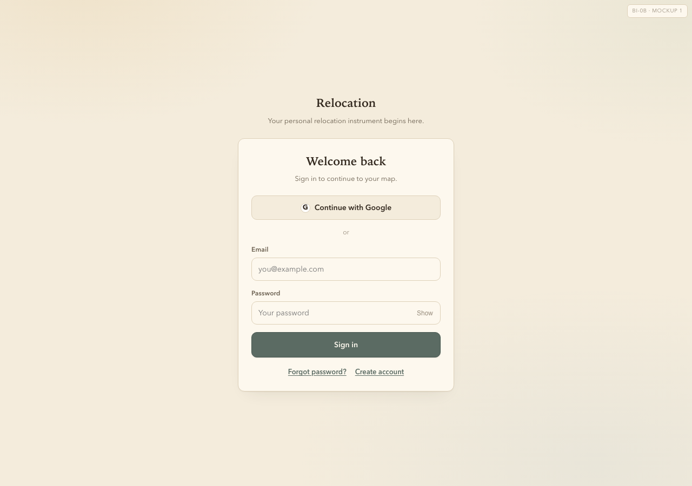
01_auth_mockup.png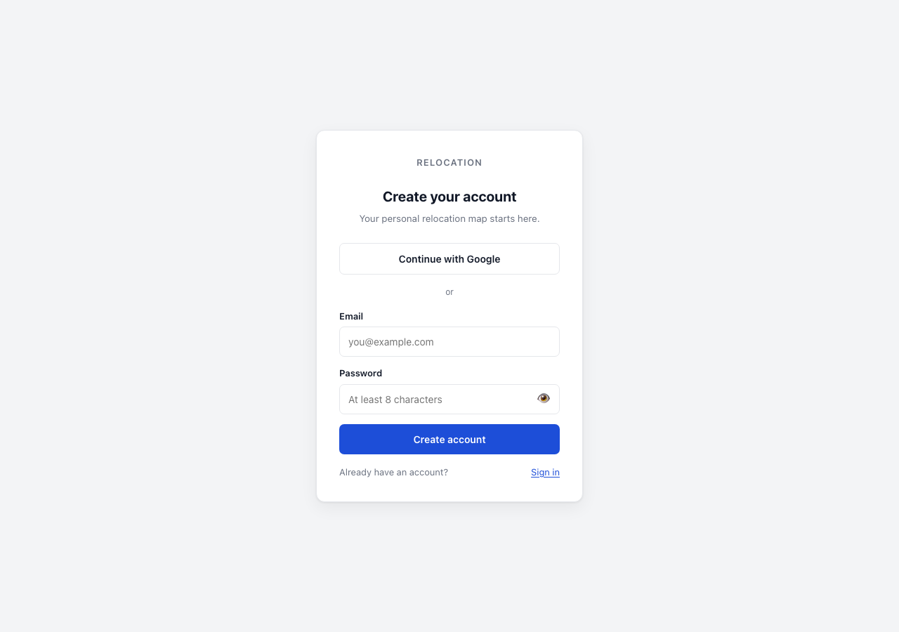
prod_auth_signup.pngBirth intake — mockup vs production
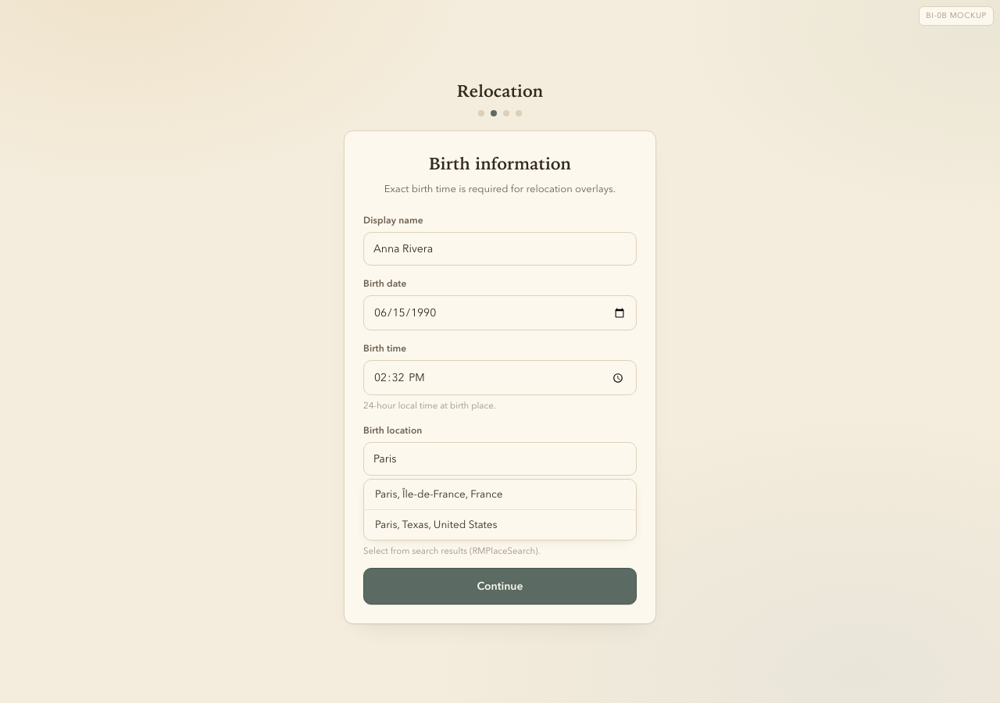
03_birth_mockup.png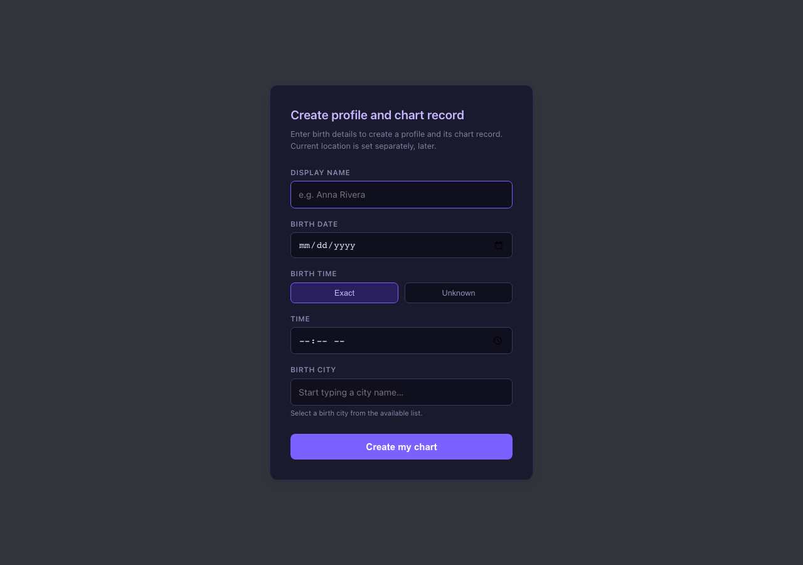
prod_intake_default.pngMap — mockup vs M2-X production map
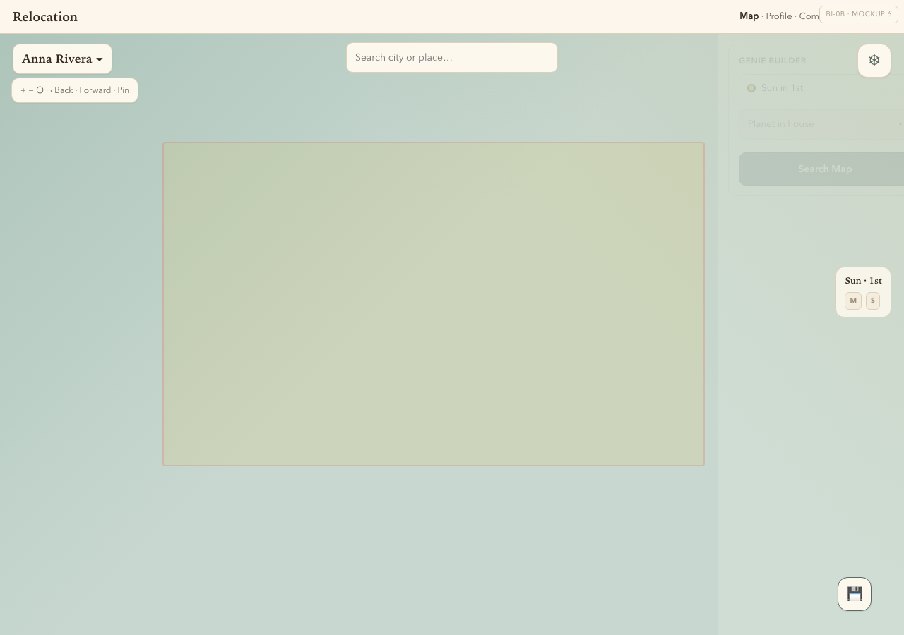
06_map_mockup.pngSee adjacent reference rows in audit doc
Save dialog — mockup vs Notes/Comparison pattern
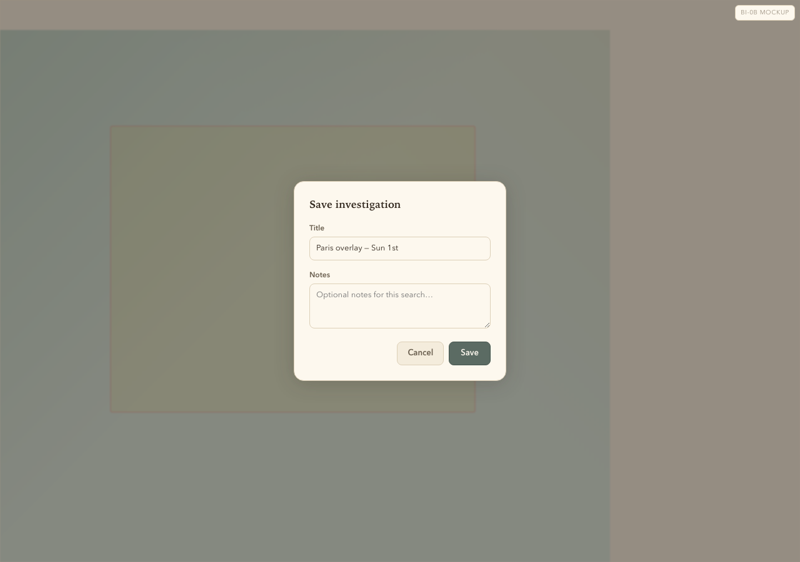
08_save_mockup.png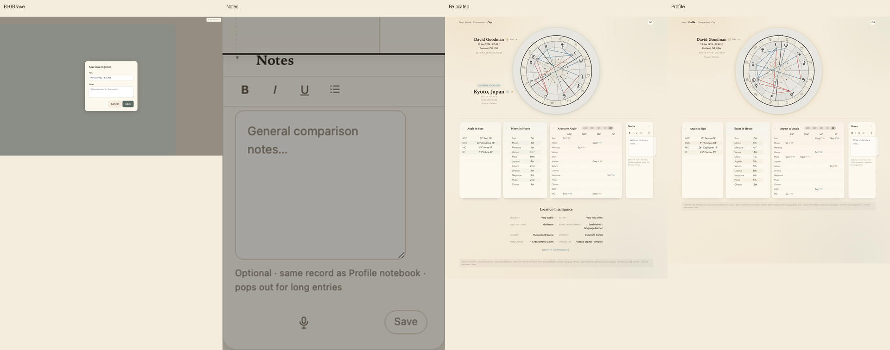
dialog_family_row.pngReference — Profile
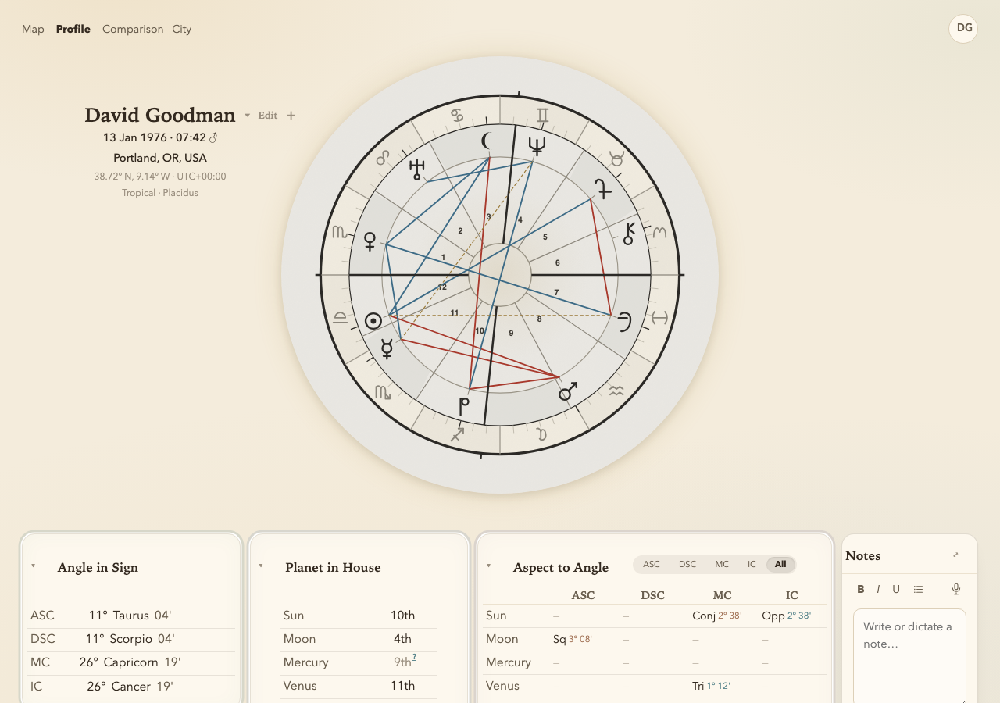
ref_profile.pngSee adjacent reference rows in audit doc
Reference — Comparison
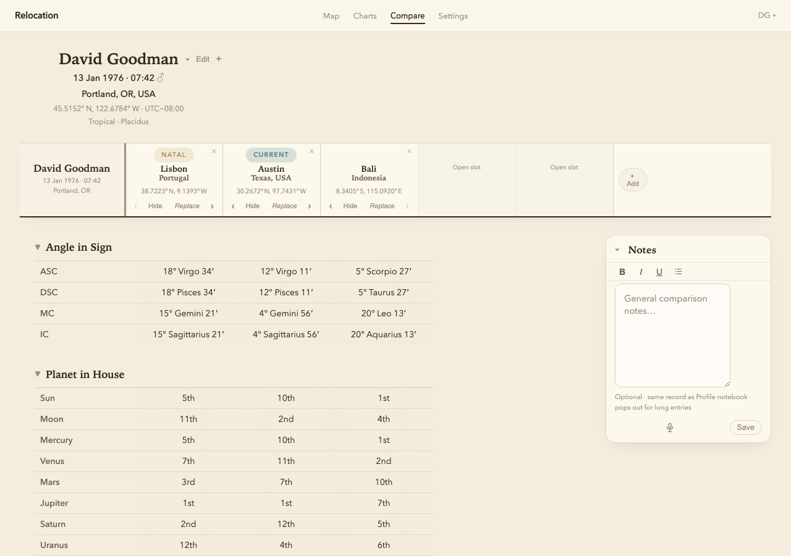
ref_comparison.pngSee adjacent reference rows in audit doc
Reference — Relocated
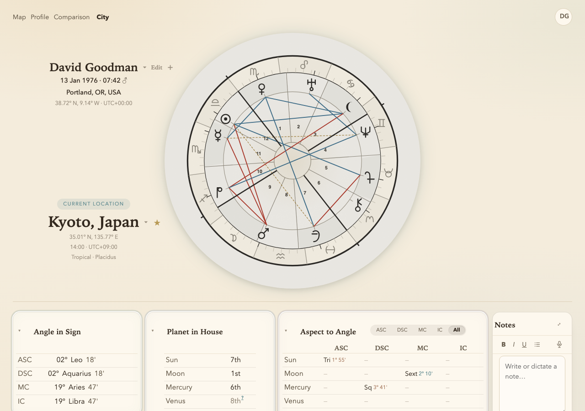
ref_relocated.pngSee adjacent reference rows in audit doc
Reference — Notes slot
ref_notes.pngSee adjacent reference rows in audit doc
Reference — Settings prototype
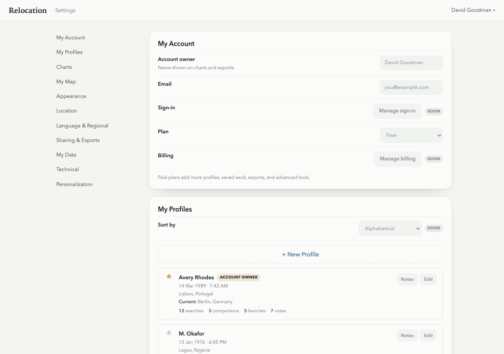
ref_settings.pngSee adjacent reference rows in audit doc